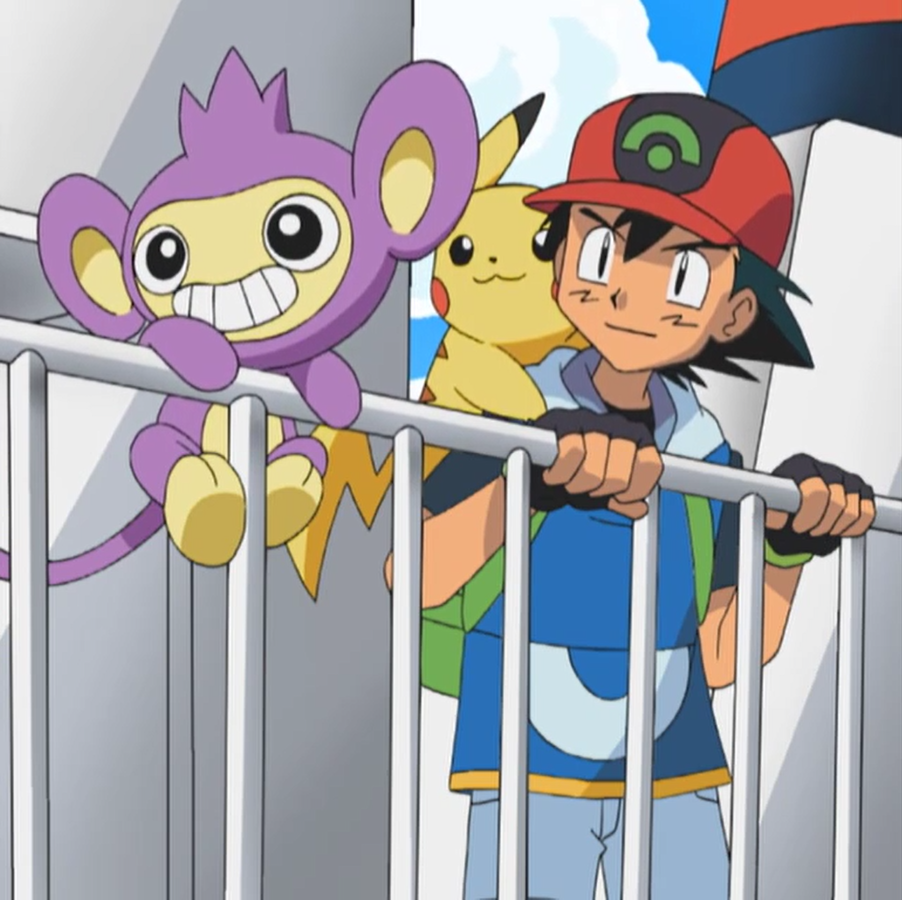
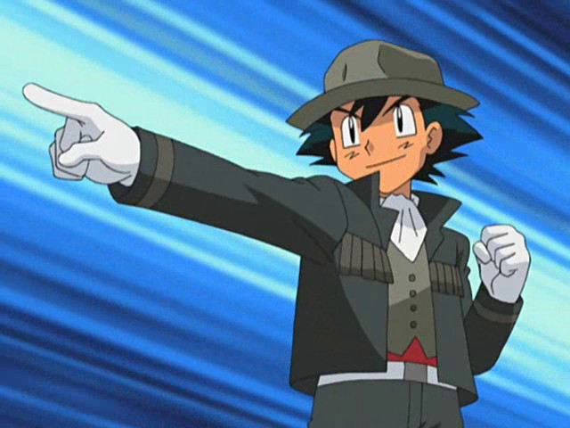

Following Ash's victory over the Battle Frontier, May set her sights on Pokémon Contests in the Johto region and traveled there while Max returned home to Petalburg City in Hoenn.
After encountering and battling his old rival, Gary (who has now become a Pokémon researcher), and learning of a new region with new Pokémon, Ash decided to leave for the Sinnoh region to earn the Gym Badges available there.
Like before, he took only Pikachu with him at first but brought his Aipom along when she snuck onto the ship Ash was leaving on.

While Brock did not directly accompany Ash to Sinnoh, he did meet with him while there and traveled with him through Sinnoh as he had for Kanto, Johto, and Hoenn.
This time, they were accompanied by another aspiring Pokémon Coordinator named Dawn. Ash enthusiastically supported Dawn in her endeavors to become a Top Coordinator. Unlike May, he watched all of Dawn's Contests without being distracted by the need to train. Just as he supported Dawn in her Contests, she supported him in his Gym battles. She would even go as far as dressing up as a cheerleader with her Pokémon sometimes and cheer for him.
While traveling through Sinnoh, Ash formed a heated rivalry with a Trainer named Paul. Throughout Ash's journey, Paul would constantly put him down and the two often argued over their nearly opposite training styles.
While Paul was harsh, distant, and sometimes plain cruel to his Pokémon, Ash insisted that the best way to raise Pokémon was through patience, caring, and friendship.
Their rivalry came to a head after they competed in a Tag Battle Tournament together, when Paul released his Chimchar after it failed to meet his expectations.
Ash then decided to take in the Chimp Pokémon and promised to make it strong using his philosophy. Although Ash always considered himself on par with him, Paul often bested him in battles as his Pokémon were very powerful, only keeping Pokémon that were naturally very strong.
Ash's Pokémon, while strong in their own right, did not yet equal. This came to a devastating defeat at Lake Acuity for Ash, losing a Full Battle while only knocking out two of Paul's Pokémon.
Ash recognized that he had to take Paul more seriously and cautiously in the future. While in Sinnoh, Ash competed in two Pokémon Contests, once in Jubilife City and a second time in the Wallace Cup upon Wallace's recommendation.

He also competed against several Pokémon Stylists in the Hearthome Collection fashion show in Arriving in Style!, where he ended up in third place, winning the Unique Award for his original performance. As Ash and his friends journeyed through Sinnoh, they ended up becoming heavily involved with legends of Sinnoh, with Ash being personally chosen by Azelf of the lake guardians.
Along with Cynthia, Looker and Team Rocket, they faced off against Pokémon Hunter J as well as the evil Team Galactic. Thanks to their efforts, the Sinnoh region was spared from Cyrus's insane scheme.
Ash eventually obtained all of the Sinnoh Gym Badges he needed to enter Sinnoh's Pokémon League Conference. During his battles in the Lily of the Valley Conference, he managed to advance to the Top 4.
For the second time since meeting Paul (the first being in a PokéRinger tournament during which Ash's Staravia evolved into a Staraptor and defeated Paul's Honchkrow), Ash managed to defeat his bitter rival, using Infernape (who had evolved from the Chimchar Paul abandoned) to deal the finishing blow.
This confirmed Ash's beliefs in how to raise Pokémon, showing that though he took his time and raised his Pokémon with care and friendship they achieved the same results as Paul's methods. This caused Paul to finally acknowledge Ash as a Trainer of some merit, thus ending their arguments.
Ash later fought against Tobias, becoming the only known Trainer to defeat his Darkrai. Although Ash ultimately lost the battle, he was not overly upset as he was closer to his Pokémon than ever before. At the conclusion of Pokémon the Series: Diamond and Pearl, Ash, Dawn, and Brock split up and went their separate ways, with Brock confirming that he would not be joining Ash on his travels to Unova as he decided to pursue his new dream of being a Pokémon doctor.